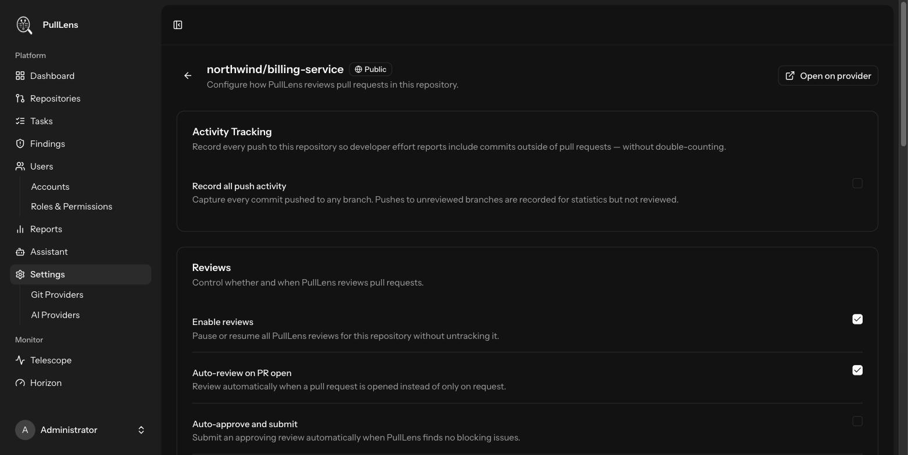
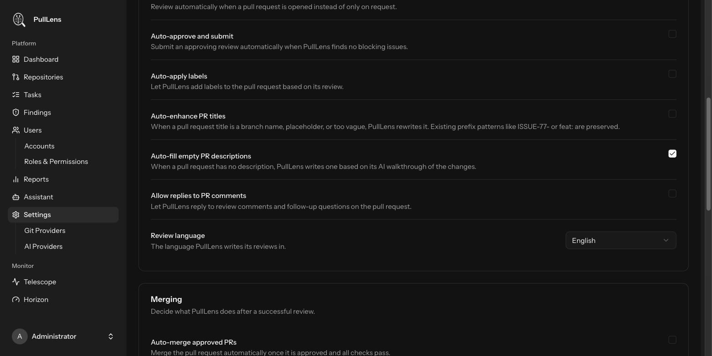
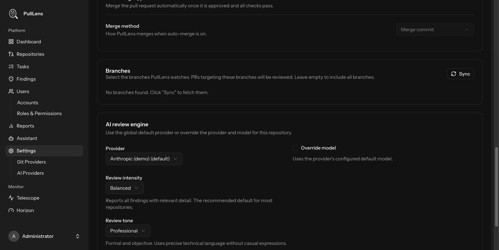
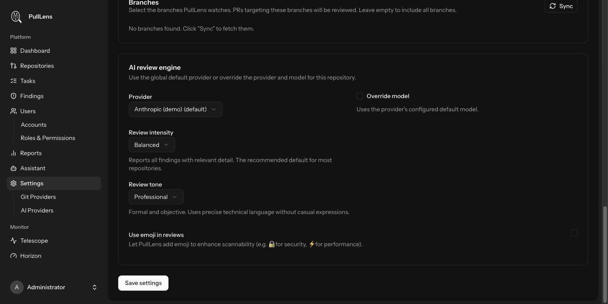

Connecting
Repository settings
Every switch on the repository settings screen, what it changes, and when you would want it.
Open a repository and press Settings, or go to Settings → Git Providers → the repository. Settings apply to that repository alone.
Activity tracking

| Setting | What it does | Default |
|---|---|---|
| Record all push activity | Records every commit pushed to any branch, not just those in pull requests. Turn this on if developers commit directly to branches and you want the effort reports to reflect that. Commits are de-duplicated by SHA, so work is never counted twice when a branch later becomes a pull request. Recording is not reviewing - pushes to unreviewed branches are counted, not commented on. | Off |
Reviews

| Setting | What it does | Default |
|---|---|---|
| Enable reviews | The master switch. Off pauses all reviewing for this repository while keeping its history and settings. Use it during a noisy migration rather than untracking. | On |
| Auto-review on PR open | Review as soon as a pull request is opened. Off means reviews only run when a new commit is pushed or you trigger one manually. | On |
| Auto-approve and submit | Submits an approving review when nothing blocking is found. Leave off unless you are confident: an approval carries weight in branch protection rules. | Off |
| Auto-apply labels | Lets PullLens add labels it suggests, such as security or feature. Only labels from a fixed vocabulary are used. | Off |
| Auto-enhance PR titles | Rewrites a title only when it carries no information - a branch name, WIP, update, or a bare ticket key. A meaningful title is never touched, and prefixes like ISSUE-77- or feat: are preserved. | Off |
| Auto-fill empty PR descriptions | Writes a description from the review walkthrough when the author left it blank. Never overwrites a description someone wrote. | On |
| Allow replies to PR comments | Lets PullLens answer follow-up questions on its findings, and evaluate a developer's claim that a finding is a false positive. Each reply costs an AI call. | Off |
| Review language | The language reviews are written in. Findings, explanations and suggested fixes all follow it. | English |
Merging

| Setting | What it does | Default |
|---|---|---|
| Auto-merge approved PRs | Merges automatically once the pull request is approved and all checks pass. Powerful and irreversible - most teams should leave this off. | Off |
| Merge method | Merge commit, squash or rebase, when auto-merge is on. | Merge commit |
Branches
| Setting | What it does |
|---|---|
| Tracked branches | Only pull requests targeting these branches are reviewed. Leave empty to review pull requests into any branch. Use it to review work heading for main while ignoring long-running spike branches. Press Sync to fetch the branch list from GitHub. |
Applies everywhere
The same branch rule governs webhook-triggered reviews and the manual Sync reviews button, so the two cannot drift apart.
AI review engine

| Setting | What it does | Default |
|---|---|---|
| Provider | Override the global default provider for this repository - a cheaper model on a low-risk repository, a stronger one on the payment service. | Global default |
| Override model | Pin a specific model rather than the provider's default. | Off |
| Review intensity | Light - only critical and high findings; short summaries. Good for a legacy repository that would otherwise produce hundreds of findings. Balanced - all findings with useful detail. Recommended. Strict - includes low and informational findings, test-coverage gaps and edge cases. Best on a codebase you are actively hardening. | Balanced |
| Review tone | Professional - formal and precise. Friendly - encouraging, acknowledges what went well. Concise - terse, no filler. Detailed - full explanations with impact and remediation steps. | Professional |
| Use emoji in reviews | Adds a marker such as a padlock for security. Emoji are stripped when posting if this is off, so a model that ignores the instruction still cannot add them. | Off |
Per-repository calibration with PULLENS.md
Commit a PULLENS.md file to the root of a repository and PullLens reads it on every review, treating it as the highest-priority instruction - above the settings above. Use it for house rules the interface cannot express:
# PullLens configuration
- This is a legacy codebase. Do not report missing type hints.
- `app/Legacy/` is frozen; ignore maintainability findings there.
- We use repository classes deliberately; do not suggest replacing them
with direct Eloquent calls.
- Always flag anything touching `PaymentProcessor` as at least high severity.